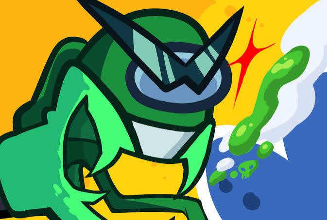
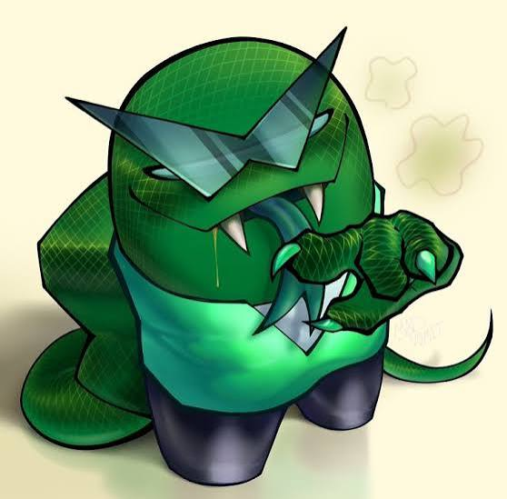

1. Fisiología Química y Evolución Corrosiva
Dentro del árbol filogenético de las mutaciones parasitarias detectadas en la flota, La Sierpe (o Viper en la literatura especializada anglosajona) representa una especialización bioquímica letal. Mientras que el impostor estándar depende de la fractura mecánica de extremidades o el apuñalamiento directo, las glándulas salivales y sublinguales de la Sierpe sintetizan un compuesto organocáustico hiperconcentrado de naturaleza ácida corrosiva capaz de disolver la materia orgánica y las aleaciones de policarbonato de los trajes espaciales.
La trascendencia táctica de este ataque químico altera los cimientos mismos de la fase forense de Among Us. Cuando la Sierpe ejecuta a un tripulante inocente, el cadáver no permanece intacto de forma indefinida sobre el suelo esperando a que un explorador lo descubra. En su lugar, el ácido inicia un proceso de licuefacción molecular que desintegra los tejidos, las vísceras y la estructura ósea en un plazo de diez a veinte segundos.
Si ningún tripulante ingresa a la habitación durante esa ventana crítica de ebullición, el cuerpo se evapora por completo en una tenue bocanada de vapor químico, eliminando todo indicio físico del homicidio. Al no quedar restos óseos en el suelo, resulta imposible activar el botón de reporte de cadáver mediante el megáfono, obligando a los supervivientes a depender exclusivamente de botones de emergencia manuales limitados.
2. Análisis de Mecánicas, Disolución y Rastro Forense
El juego de la Sierpe se desarrolla contra el reloj de la descomposición molecular:
2.1. Inyección de Ácido [Ataque Químico]
Inocula una toxina corrosiva en el tripulante. El cadáver entra de inmediato en una cuenta regresiva visual de desintegración y disolución. Esta capacidad ejerce un impacto directo sobre la dinámica de supervivencia en la nave (Tiempo de Disolución: 12 a 20 Segundos), obligando tanto a aliados como a adversarios a recalcular constantemente sus rutas de tránsito y tiempos de reacción.
2.2. Borrado Forense Definitivo [Supresión de Prueba]
Si el contador llega a cero sin que nadie lo reporte, el cuerpo desaparece por completo, impidiendo convocar asambleas por megáfono. Esta capacidad ejerce un impacto directo sobre la dinámica de supervivencia en la nave (Resultado: Sin megáfono de reporte), obligando tanto a aliados como a adversarios a recalcular constantemente sus rutas de tránsito y tiempos de reacción.
2.3. Vapor Cáustico Residual [Riesgo / Indicio]
Durante la disolución, el cadáver desprende burbujas y vapor verdoso visible a distancia, alertando a los transeúntes de un crimen químico reciente. Esta capacidad ejerce un impacto directo sobre la dinámica de supervivencia en la nave (Señal Visual: Burbujas Químicas), obligando tanto a aliados como a adversarios a recalcular constantemente sus rutas de tránsito y tiempos de reacción.
3. Ventajas Estratégicas y Puntos Vulnerables
3.1. Ventajas Operativas y Fortalezas Estratégicas
El despliegue eficiente de este rol aporta ventajas sustanciales que permiten maximizar el control del mapa y acelerar los objetivos del equipo:
3.2. Vulnerabilidades Críticas y Limitaciones Operativas
No obstante, el operador se encuentra sujeto a vulnerabilidades severas que los adversarios procurarán capitalizar en los momentos de mayor tensión:
- Punto vulnerable: Si alguien entra durante los segundos de ebullición, el vapor delata un crimen de Sierpe.
- Punto vulnerable: Si es visto cerca del cuerpo mientras este burbujea, su autoría queda confirmada.
- Punto vulnerable: Tiempo de recarga de ataque ligeramente superior para compensar el borrado del cadáver.
- Punto vulnerable: El Científico aún puede registrar en sus signos vitales el segundo de la muerte.
4. Estrategia Avanzada y Sociometría del Debate
4.1. El Asesinato en Cámaras Ciegas
Ejecuta el ácido en los fondos de habitaciones alejadas de las rutas principales (como el sector de especímenes en Polus o la bodega de carga en The Airship). Los quince segundos que tarda el cuerpo en disolverse pasarán desapercibidos y el cuerpo se evaporará para siempre.
4.2. La Táctica del Bloqueo Hermético
Tras inyectar el ácido a la presa, sabotea de inmediato las puertas de la sala para sellarla desde fuera durante diez segundos. Al volver a abrirse los accesos, los restos ya se habrán volatilizado por completo ante la perplejidad de quien intente ingresar a investigar.
5. Perfil Operativo y Parámetros Técnicos
Desde la perspectiva de diseño lúdico y balance de juego estandarizado, este personaje se caracteriza por los siguientes parámetros oficiales normados:
- Facción: Impostores.
- Especialidad: Corrosión & Disolución.
- Poder Central: Evaporar Cadáver.
- Tiempo Disolución: 12s a 20s.
- Indicio Visual: Vapor Cáustico.
- Impacto Forense: Sin reporte posible.
- Dificultad: Avanzada.
6. Recursos Multimedia Obligatorios: Sonido y Vídeo
Burbujeo del Ácido Corrosivo
Efecto sonoro cáustico de la descomposición molecular del tejido presurizado.
Vídeo Demostrativo de La Sierpe
Secuencia de inoculación de la toxina y evaporación del cuerpo en sala cerrada.
7. Archivos Gráficos y Evidencias Visuales

